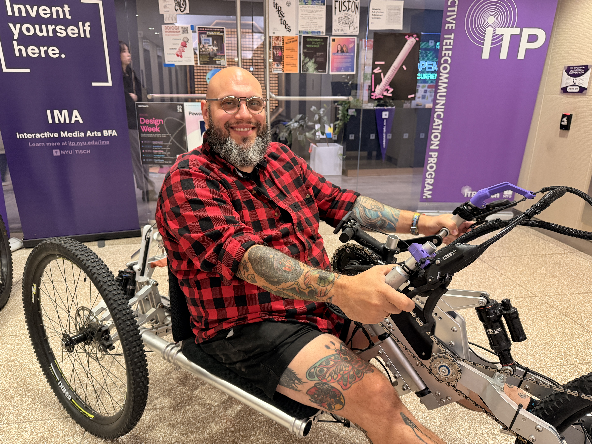

Mjolnir's Past, Present, and Future with Phil Caridi
Clinical Instructor Phil Caridi shares his journey with Project Mjolnir and the evolution of the adaptive bike.

Mjolnir began with a shared frustration—and a shared understanding of what it means to live with an injury. Phil and Noel met on the ITP floor, where Phil had recently graduated and was working as a research resident focused on fabrication. They discovered they had a lot in common: both had studied industrial design, both had experienced major back injuries, and both had long histories with bikes.
Phil had spent roughly 14 years as a professional bike mechanic, including work with race teams and training mechanics for a bike-shop company. Noel brought the perspective of someone whose bike kept breaking and who could be left waiting months for repairs because replacement parts were proprietary. Together, they started designing a bike that could be repaired, adapted, and made more accessible to the people who needed it.
That idea became Mjolnir. From the beginning, the project’s open-source approach was central: make the design files available so people can build the bike themselves, work with a manufacturer, or adapt parts to suit their needs. The aim is to lower the barriers—especially cost and access—so more people can get on a bike. Mjolnir is meant to serve a range of users, from independent builders to people who need support from an organization, without putting profit at the center of the project. Mjolnir Open Source Bike Project.
The work began in Fall 2022, with Phil and Noel developing the initial design. In Spring 2023, they brought students into the project through the university’s VIP program. At first, the group was small and focused on a fundamental question: could they make the bike work? Students initially contributed smaller changes, while Phil and Noel carried much of the design work.
Over time, the project and the team grew. The group has expanded from a handful of people to roughly 10–12 students in a semester, with many more students contributing across semesters. Students now take on larger parts of the work, and the project has become more self-sufficient. Phil describes the change as both a design shift and a learning process: students gain confidence by trying, failing, and iterating, while knowledge and responsibility stay with the group as members come and go.
“The students are driving the progression, and the students are really responsible for carrying the bulk of the weight.”
The team’s way of working has also become more distributed. Phil and Noel have developed designs across the U.S. and Shanghai, sharing files through cloud-based tools and prototyping in both locations. That arrangement supports rapid iteration, but it also makes coordination more important. Version control, file organization, and agreed design standards are ongoing challenges as more people contribute.
The project’s current work falls into three connected areas:
Information and outreach: Building the website and improving social media and documentation so people can understand the project, find resources, and learn where bikes may be available.
The Tadpole: Developing a new bike design, with the team needing clearer shared standards and file-management practices to coordinate contributions.
More tailored solutions: Exploring quality-of-life improvements for people with different needs, including controls for riders with limited finger dexterity, such as sip-and-blow or voice-activated options.
"I think that when we think about the open source nature of the project, that's really what it comes down to: the ability to take the files down, make them, and augment them for your specific need.”
For Phil, making the bike is only part of the work. Clear documentation, organized design files, and a public-facing website help make the project’s open-source promise real: people need to be able to find the information, use it, and adapt it. The long-term vision is for the website to help people locate bikes through organizations and communities, while keeping the designs accessible to anyone who wants to build or modify them.